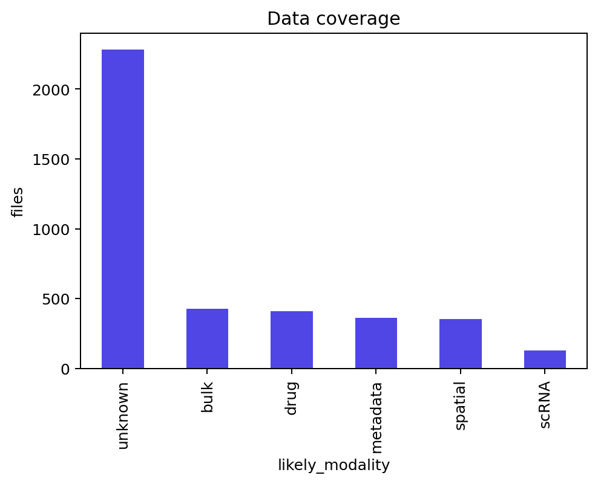
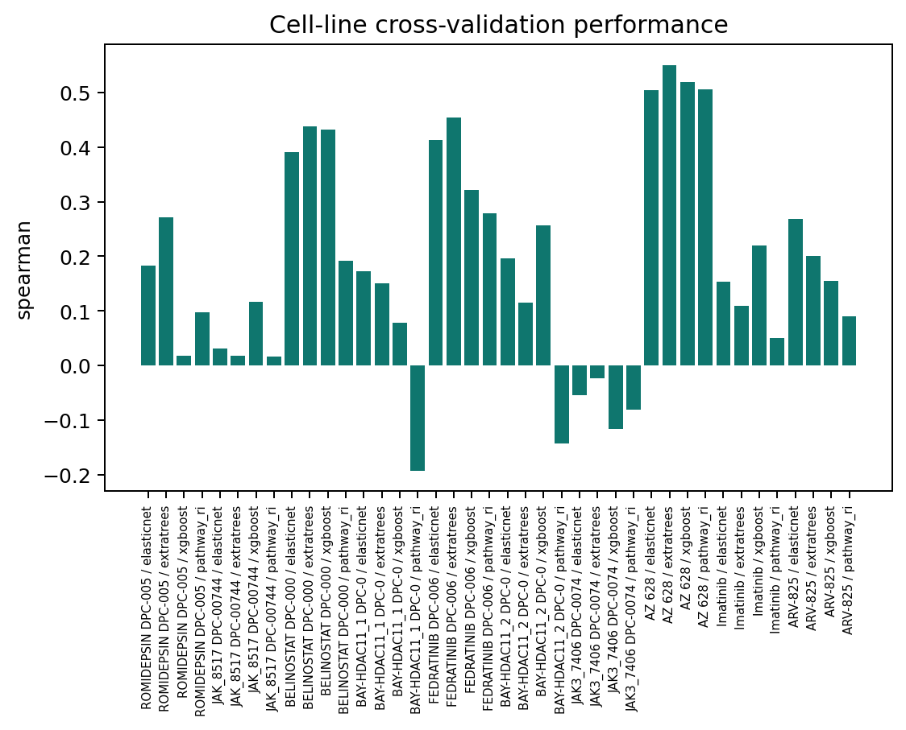
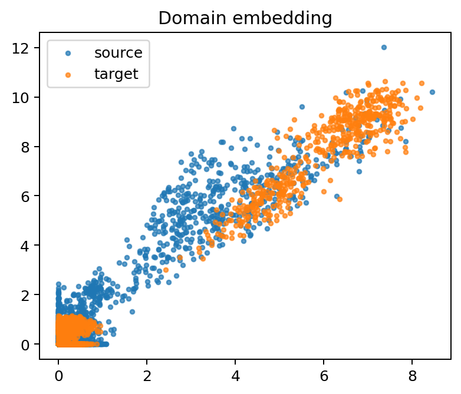
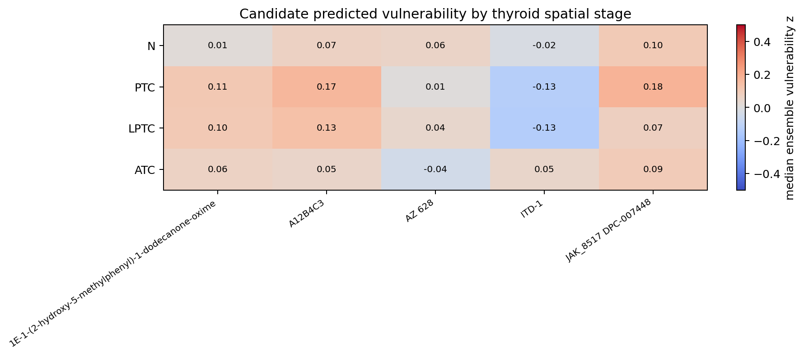
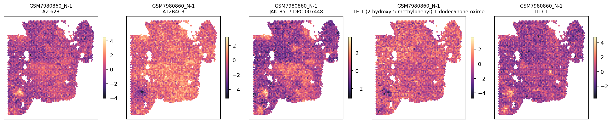
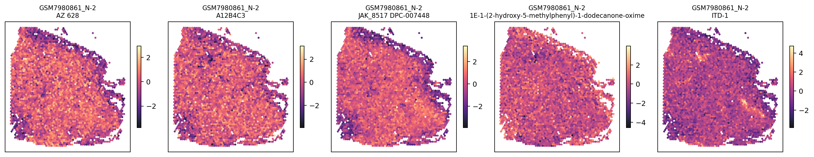
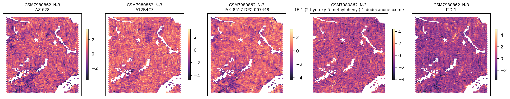
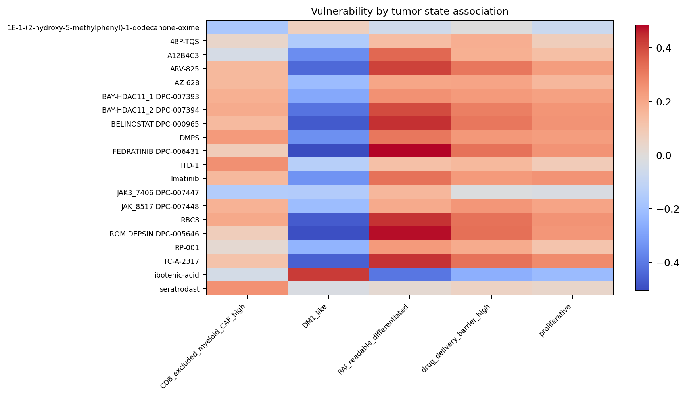
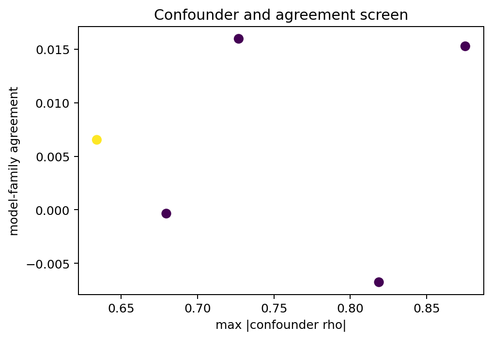
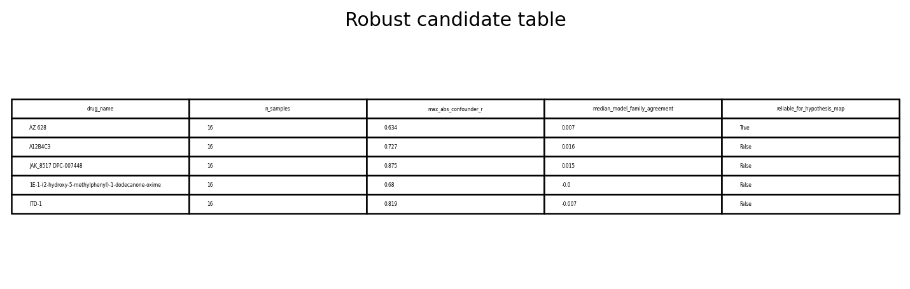

{kind=link}
{kind=link}
01TL;DR
The pilot is complete end-to-end and expanded across all 16 stored GSE250521 thyroid Visium slides: inventory, local DepMap/GDSC/PRISM-like preparation, target AnnData preprocessing, baseline model training, MMD/CORAL adaptation, spot-level spatial prediction, state/niche summaries, negative controls, figures, and final markdown report.
02Data Coverage

| Input | Pilot result | Source |
|---|---|---|
| Cell-line expression | 1,719 cell lines x 19,215 genes, log2(TPM+1)-like matrix | project/results/p3_p9_full_execution/paper9/raw/OmicsExpressionTPMLogp1HumanProteinCodingGenes.csv |
| Drug response | 1,869,178 long-form rows from GDSC1/GDSC2 and PRISM pilot LFC | project/spatial_drug_vulnerability/results/tables/drug_response_long.tsv |
| Spatial target | 16 GSE250521 scored h5ad files, 4 normal / 4 PTC / 4 LPTC / 4 ATC, each intersecting 2,011 model genes | project/data/processed/GSE250521/*/*.scored.h5ad |
| Expanded score table | 2,514,285 rows for the retained candidate set across 16 slides | project/spatial_drug_vulnerability/results/tables/spatial_drug_scores_long.tsv |
03Model Training

| Family | Status | Notes |
|---|---|---|
| ElasticNet / logistic | Ran | Fast source-domain linear baseline. |
| ExtraTrees | Ran | Nonlinear tree baseline with pilot-sized estimators. |
| XGBoost | Ran where installed | Skipped gracefully if missing in future environments. |
| Signature DE | Ran | Sensitive-vs-resistant direction score. |
| Pathway ridge | Ran | Curated pathway-compressed baseline. |
04Domain Adaptation

Implemented practical CORAL feature alignment plus a minimal PyTorch MMD response model for 5 pilot drugs. The feature cap is intentional for fast pilot execution.
05Spatial Maps






06Cell-Type and Tumor-State Summary

07Validation and Negative Controls

Sanity checks include library size, n_genes, mitochondrial fraction, epithelial/tumor-proxy score, proliferation, hypoxia, CAF/ECM, spatial KNN smoothness, and family agreement.
08Robust Pilot Candidates

| Candidate | Retained? | Reason to inspect |
|---|---|---|
| AZ 628 | Yes after all-16 expansion | RAF/MAPK-axis PRISM candidate with all-16 atlas and stage summary. |
| A12B4C3 | No after all-16 expansion | Confounder threshold exceeded after applying to all slides. |
| JAK_8517 | No after all-16 expansion | Initial signal weakened under expanded confounder screen. |
| ITD-1 | No after all-16 expansion | Agreement/confounder profile did not pass strict retention. |
| 1E-1-(2-hydroxy-5-methylphenyl)-1-dodecanone-oxime | No after all-16 expansion | Compound identity and model-family agreement require manual vetting. |
09Limitations
- Cell-line drug labels are source-domain measurements, not spatial tissue response.
- Visium spots mix malignant and non-malignant compartments.
- Unsupervised domain adaptation cannot prove target-domain drug response.
- Predicted vulnerability may still track proliferation, purity, library size, hypoxia, or niche composition.
- Several PRISM compounds require manual annotation before biological claims.
10Source Paths
| Artifact | Path |
|---|---|
| Module | project/spatial_drug_vulnerability/ |
| Final markdown report | project/spatial_drug_vulnerability/results/reports/SPATIAL_DRUG_VULNERABILITY_PILOT_REPORT.md |
| First pilot study package | project/spatial_drug_vulnerability/results/reports/SPATIAL_DRUG_VULNERABILITY_FIRST_PILOT_STUDY_PACKAGE.md |
| Score table | project/spatial_drug_vulnerability/results/tables/spatial_drug_scores_long.tsv |
| Processed score-bearing h5ad | project/spatial_drug_vulnerability/results/tables/processed_spatial_with_drug_scores_*.h5ad |
| Figures | project/spatial_drug_vulnerability/results/figures/ |
Full-scale command
bash project/spatial_drug_vulnerability/run_all.sh --pilot false --max_drugs 200 --max_spatial_files 999 --skip_download true --device auto